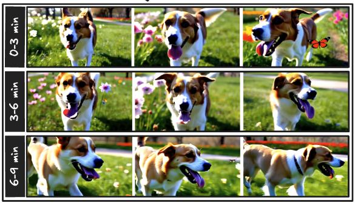
GEnerative Modeling (GEM) Lab
GEnerative Modeling Lab.
GEMLAB is led by Dr. Pinar Yanardag at Virginia Tech, Department of Computer Science. We research generative models — controllable image and video generation, diffusion-based editing and personalization, creativity, and the interpretability of modern generative systems.
01Selected publications
Publications
A selection of recent work from GEMLAB at CVPR, NeurIPS, ICCV, and ICML.
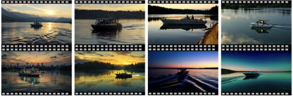
Diverse Video Generation with Determinantal Point Process-Guided Policy Optimization
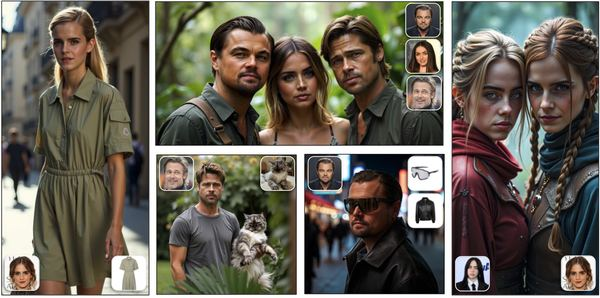
LoRAShop: Training-Free Multi-Concept Image Generation and Editing with Rectified Flow Transformers
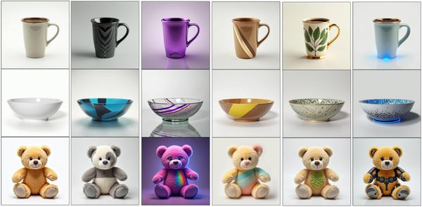
Personalized Image Editing in Text-to-Image Diffusion Models via Collaborative Direct Preference Optimization
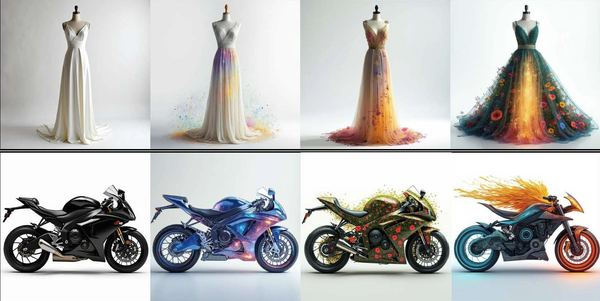
CREA: A Collaborative Multi-Agent Framework for Creative Content Generation with Diffusion Models
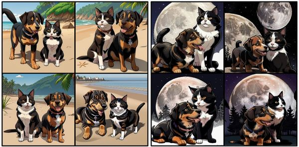
CLoRA: A Contrastive Approach to Compose Multiple LoRA Models
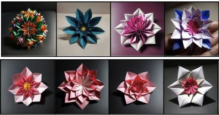
LoRAverse: A Submodular Framework to Retrieve Diverse Adapters for Diffusion Models
FluxSpace: Disentangled Semantic Editing in Rectified Flow Transformers
LoRACLR: Contrastive Adaptation for Customization of Diffusion Models
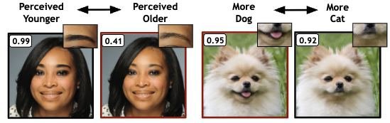
Explaining in Diffusion: Explaining a Classifier Through Hierarchical Semantics with Text-to-Image Diffusion Models
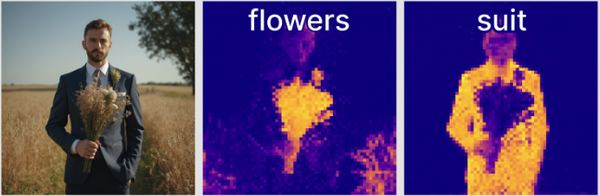
ConceptAttention: Diffusion Transformers Learn Highly Interpretable Features
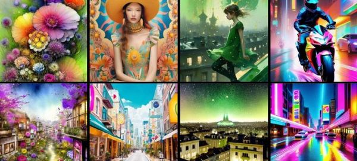
Stylebreeder: Exploring and Democratizing Artistic Styles through Text-to-Image Models
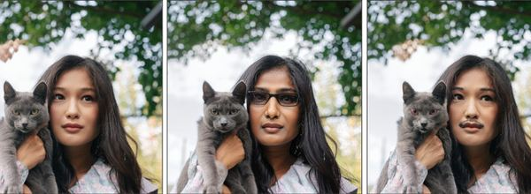
NoiseCLR: A Contrastive Learning Approach for Unsupervised Discovery of Interpretable Directions in Diffusion Models
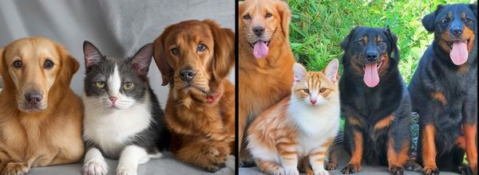
CONFORM: Contrast is All You Need For High-Fidelity Text-to-Image Diffusion Models
RAVE: Randomized Noise Shuffling for Fast and Consistent Video Editing with Diffusion Models
02Latest
News
Recent milestones from the lab.
Mar 3
2026
Four papers accepted to CVPR 2026 — three to the main conference and one to Findings.
Sep 25
2025
Four papers accepted to NeurIPS 2025, main conference.
Feb 3
2025
Three papers accepted to CVPR 2025.
Apr 3
2024
Two papers selected as Oral and Highlight at CVPR 2024.
Mar 3
2024
Three papers accepted to CVPR 2024.
03The people
Team
GEMLAB is led by Dr. Pinar Yanardag, with a group of PhD researchers at Virginia Tech.
PY
Pinar Yanardag
Principal Investigator
HY
Hidir Yesiltepe
PhD Student
YD
Yusuf Dalva
PhD Student
TM
Tuna Han Salih Meral
PhD Student
KA
Kiymet Akdemir
PhD Student
 ES
ES
Enis Simsar
PhD Student · Co-advised at ETH Zurich
TK
Tahira Kazimi
PhD Student
CD
Connor Dunlop
PhD Student
Alumni
Oguz Kaan Yuksel →EPFLDilara Gokay →DeepMindAlara Dirik →Imperial College LondonUmut Kocasari →TUMKerem Zaman →UNC Chapel HillMert Yuksekgonul →StanfordZehranaz Canfes →TUMFurkan Atasoy →TUMBerkay Doner →EPFLElif Sema Balcioglu →EPFLEylul Yalcinkaya →MetaCemre Efe Karakas →AmazonMerve Rabia Barin →PurdueEzgi Gulperi Er →Goldman Sachs
04Collaborate
Let’s collaborate
We work across industry and academia, and we’re always open to new partnerships.
GEMLAB partners with leading companies and research labs on generative-AI research, internships, and joint projects. If our work resonates with yours, we’d love to hear from you — just drop us an email.
Selected partners & collaborators
Google ResearchAdobe ResearchSnap Inc.Qualcommfal.aiDeloitte& many more
05Get in touch
Connect
Drop us an email or find us on social.